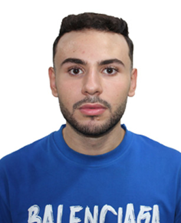

Page personnel de Benkortbi Abderrahmane
Informations de contact
- Nom et prénom : Benkortbi Abdrrrahmane
- Ville de résidence : Médéa
- Email : abbenkortbi_etd@esgen.edu.dz
- Numéro de téléphone : 0559518609
Actuellement étudiant en deuxième année de master spécialité finance digital et management des banques à l'école supérieure de gestion et d'économie numérique, je suis à la recherche d'un stage de 6 mois dans le cadre de ma formation. Passionné par les finances, je souhaite approfondir mes compétences dans ce domaine.

- Formation
- Compétences
- Centres d’intérêts
- Plus d’informations
- 2021 - Aujourd'hui : MASTER en finance digital et management des banques, ESGEN
- 2020 - 2021 : Baccalauréat Scientifique, Lycée benzemirli khaled
Langues
- Arabe : Langue maternelle
- Anglais : Niveau intermédiaire
- Francais : Niveau avancé
Centres d’intérêts
Compétences
- gestion des riques
- analyse financière
- Communication écrite et orale
Pour plus d’informations cliquer, ici.